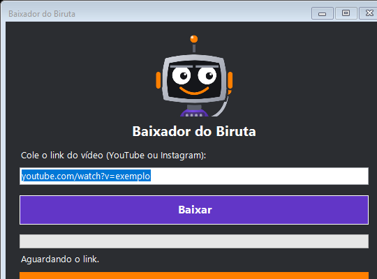

Oficina do Birut
Oficina do BirutMateriais / Baixador de Vídeos / Programa pronto
Baixador
de Vídeos
Cola o link do YouTube ou do Instagram, e o vídeo é salvo com o nome original dele, na pasta que você escolher, em MP4 na melhor qualidade ou só o áudio em MP3. A instalação leva alguns minutos e só precisa ser feita uma vez.
Baixe apenas vídeos seus ou com autorização de quem os publicou. Os termos do YouTube e do Instagram proíbem baixar conteúdo de terceiros sem permissão.
Passo a passo
Baixe o pacote
Um arquivo .zip pequeno, com o programa, o instalador e este guia em texto.
↓ Baixar o pacoteExtraia em uma pasta fixa
Clique com o botão direito no .zip e escolha Extrair tudo. Use uma pasta que você não vai mover, como Documentos. Não abra os arquivos de dentro do .zip sem extrair antes.
Instale (só uma vez)
Dê dois cliques em 1 - Instalar (so uma vez). Se o Windows perguntar algo, clique em Sim. O instalador também procura versões antigas do Baixador e pergunta se pode apagá-las (só apaga arquivos do próprio Baixador, nunca os seus vídeos). Aguarde até aparecer "Pronto!". O instalador coloca as duas ferramentas livres que fazem o trabalho (yt-dlp e ffmpeg) e cria o atalho Baixador do BirutIA na Área de Trabalho.
Use
Abra o atalho e cole o link (botão Colar ou Ctrl + V). Escolha a pasta em Escolher..., o formato (MP4 ou só o áudio em MP3) e clique em Baixar. A barra mostra a porcentagem, a velocidade e o tempo que falta. Ao terminar, o arquivo aparece com o nome original do vídeo. Marque Fechar o programa quando terminar se quiser que a janela se feche sozinha.

Se algo der errado
O antivírus mandou arquivos para a quarentena
É um alarme falso. O programa roda o PowerShell sem mostrar janela e baixa arquivos, e alguns antivírus desconfiam disso por padrão.
- Abra o antivírus e vá em Quarentena.
- Restaure os arquivos do Baixador e escolha adicionar exceção.
- Adicione a pasta inteira do Baixador como exceção. Os nomes dos menus mudam conforme a versão.
O antivírus também pode reclamar do yt-dlp ou do ffmpeg, que o instalador coloca em outra pasta. Restaure da mesma forma.
O atalho não abre
Dê dois cliques em Abrir Baixador (ver erro), dentro da pasta do Baixador. Uma janela preta mostra o motivo exato. Copie a mensagem e mostre ao Claude para ele corrigir com você.
O Windows bloqueou o programa
O Windows costuma bloquear scripts por padrão. O Baixador já abre com a liberação embutida, só para a execução dele, sem mudar nenhuma configuração do seu computador. Se mesmo assim aparecer um aviso, use Abrir Baixador (ver erro) e peça ajuda ao Claude com a mensagem.
O vídeo não baixa
No Instagram, só funcionam vídeos de perfis públicos. Perfis privados e stories não baixam. O YouTube e o Instagram mudam as regras com frequência, e o programa pode parar de funcionar um dia. Se isso acontecer, peça ao Claude: "atualize o yt-dlp e ajuste o Baixador".
Deixe com a sua cara
Trocar logo, cores e nome
O programa é livre e foi feito para você mudar, sem mexer em código.
- Tudo fica em um arquivo: abra
marca.jsoncom o Bloco de Notas. - Nome e atalho: troque os textos de
nome(título da janela) eatalho(nome do atalho na Área de Trabalho). - Logo: coloque a sua imagem na mesma pasta e escreva o nome do arquivo em
logo. Quadrada ou larga, ela se ajusta sozinha. - Cores:
corPrincipal,corDestaqueecorFundousam o formato [vermelho, verde, azul], de 0 a 255. O texto dos botões muda sozinho para ficar legível. - Para aplicar: rode de novo
1 - Instalar. Ele apaga a cópia anterior e cria o atalho com o seu nome.